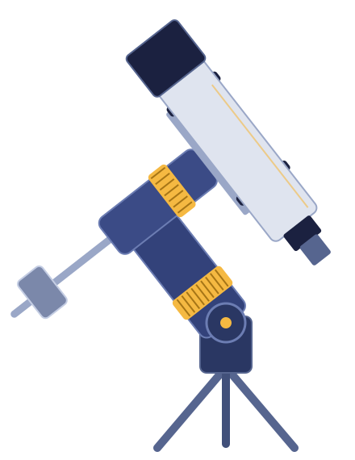
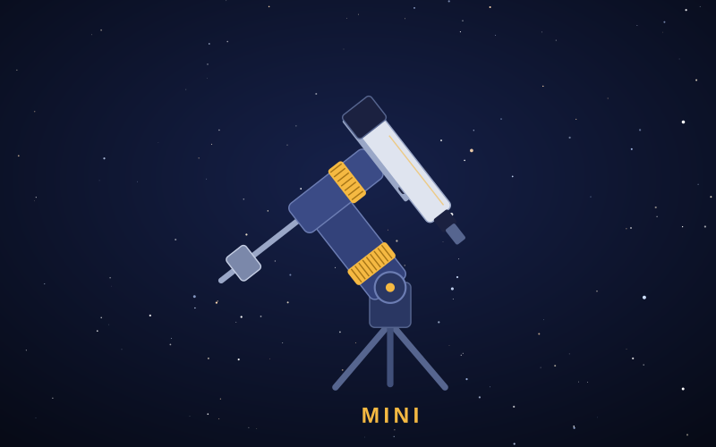
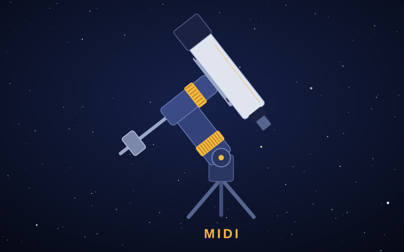
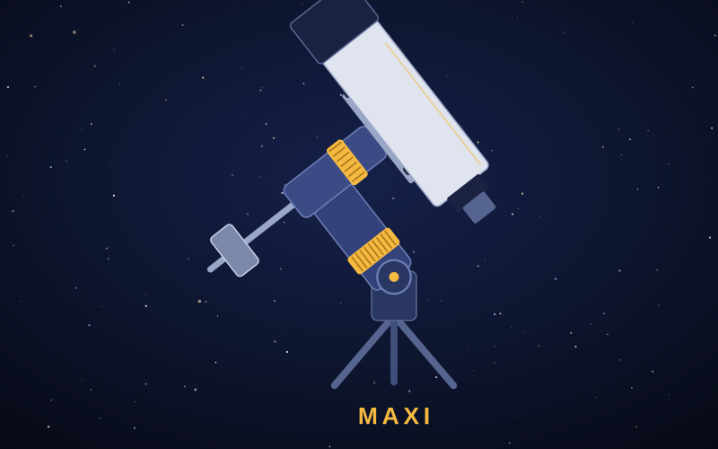
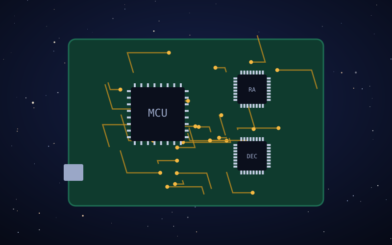

Build your own astrophotography kit
DIY Astro shares hardware and software projects for astrophotography: designs, firmware, drivers and build notes, with photos taken using the finished kit.

Featured project
The first DIY Astro project is a German equatorial mount driven by strain-wave (harmonic) gears. It has no backlash, high torque and a compact design, and comes in three sizes.

Mini
Portable mount for small refractors and camera lenses. Up to 5 kg.
Read more →
Midi
All-round imaging mount for mid-sized scopes. Up to 12 kg.
Read more →
Maxi
Observatory-class mount for large instruments. Up to 25 kg.
Read more →
Mount controller firmware
ESP32-based controller with tracking, GoTo, guiding and Wi-Fi/USB connectivity. One firmware for all three mounts.
Read more →
ASCOM driver
Windows ASCOM telescope driver, so the mount works with N.I.N.A., PHD2, SharpCap, Cartes du Ciel and more.
Read more →What you’ll find here
Hardware
Mechanical designs, drawings, CAD and parts lists that you can build at home.
Firmware
Open microcontroller code for motion control, with build and flashing guides.
Software
Drivers and utilities that connect DIY hardware to standard imaging software.
Results
Images taken with the finished equipment, with notes on what worked and what didn’t.